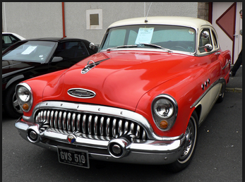
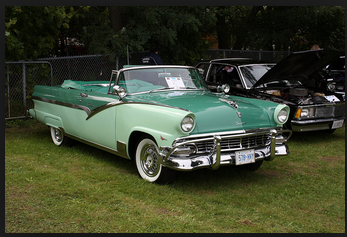
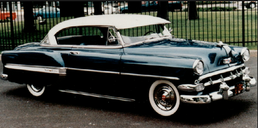

The Buick
The Buick Special was the last model to receive a new full-width body, in mid-1949 as a 1950 model. Before that the Specials were basically Fisher B-bodies dating back to 1941. The new model was introduced with a “snaggle-tooth” grille, which spilled down over the bumper and was also fitted to Super and Roadmaster models. Specials had three

www.cccc.edu
The Ford
The 1954 Ford Crestline Sunliner Convertible was a pivot point for its manufacturer. On one hand, it carried over the styling (albeit facelifted), the body styles, and the series names in place since 1952. On the other hand, the new lineup, including the 1954 Ford Crestline Sunliner convertible, ushered in certain engineering and detail changes that would live on in its successors.

www.cccc.edu
The Chevy
The 1953 Chevrolet automobile came in three basic body styles. The 1500 and 2100 series continue from the previous years. However, the new Bel Air or 2400 Series is new for the 1953 Chevrolet models. Because the name, Bel Air, now applies to a series instead of an individual model, changes in the body style have been made.
www.cccc.edu